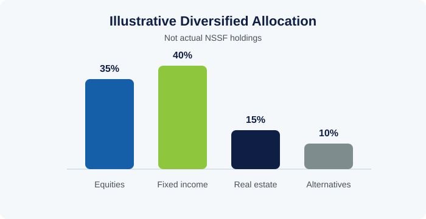

Tier 2
Pension fund investing differs from most other investment activity in one crucial way: the money belongs to millions of individual members who are relying on it decades into the future. That single fact shapes almost every principle covered here.
1. What Makes Pension Fund Investing Different
Most investment guidance is written around a general goal of maximizing return for a given level of risk. Pension funds work from a related but distinct starting point: the fund exists to meet long-term obligations to members - eventual benefit payments - so investment decisions are typically framed around 'liability-driven' thinking, matching the fund's investment horizon and risk profile to when and how members will need to draw on their savings, rather than optimizing purely for short-term returns.
This long horizon is actually an advantage many other investors don't have. A pension fund with decades before most of its liabilities come due can typically tolerate more short-term market volatility than an investor who might need to withdraw funds within a year or two, because there is time for markets to recover from downturns. Institutional investors describe this as having a longer 'investment horizon' or greater capacity to bear illiquidity - being able to hold assets that cannot be quickly sold, in exchange for potentially higher long-term returns.
Actuarial input is central to translating this into practice: actuaries estimate the fund's future obligations based on member demographics, contribution patterns, and assumptions about returns and inflation, giving the investment function a target to plan around rather than an open-ended mandate to simply 'grow the fund'.
2. Asset Allocation and Diversification
Asset allocation - the decision of how much of a portfolio to hold in different broad categories such as equities, fixed income (bonds), real estate, and alternative assets - is widely regarded as the single most influential decision in long-term portfolio performance, generally mattering more than the selection of individual securities within each category.
Diversification, the practice of spreading investments across assets that do not all move together, reduces the risk that any single event severely damages the whole portfolio. The principle is old (often summarized as 'don't put all your eggs in one basket') but the modern portfolio-theory version, developed by Harry Markowitz, formalizes how combining assets with different risk-return characteristics can produce a portfolio with a better risk-adjusted outcome than any single asset held alone.

For a fund the size of a national pension scheme, diversification also spans geography and asset class beyond the domestic market - while maintaining a meaningful allocation to domestic investment that supports national development, in line with the fund's public mandate. Balancing these considerations (return, risk, liquidity, and domestic development impact) is a recurring theme in how public pension funds set strategic asset allocation policy.
3. Governance of Investment Decisions
An Investment Policy Statement (IPS) is a foundational governance document that sets out a fund's investment objectives, risk tolerance, target asset allocation ranges, and the rules under which investment decisions are made and reviewed. Its purpose is to keep investment decisions disciplined and consistent over time, rather than reactive to short-term market sentiment or individual preference.
Independent oversight - typically an investment committee reporting to the board, sometimes supported by external advisors - provides a check on investment decisions separate from the team executing them day to day. This separation matters because it reduces the risk that a single individual's judgment, however well-intentioned, goes unchallenged on decisions involving very large sums of member money.
Managing conflicts of interest is a related governance discipline: investment staff and decision-makers are typically required to declare personal financial interests that could overlap with the fund's investment decisions, and to recuse themselves from decisions where a conflict exists. This is standard practice across well-governed institutional investors globally, not a sign of distrust in any individual.
4. Risk, Return, and Long-Term Member Value
Performance is normally assessed against a benchmark - a reference index or blend of indices representing what a passive, comparable investment strategy would have achieved - rather than in isolation, since a positive return in a strong market year may still represent underperformance relative to what was achievable.
For a pension fund, real returns (returns after subtracting inflation) matter more than nominal returns, because the fund's purpose is to preserve and grow members' purchasing power over time, not just the number on a statement. A nominal return that fails to outpace inflation can represent an erosion of real member value even while the account balance appears to be growing.
The 'prudent person principle' - a long-standing standard in pension and trust law across many jurisdictions - requires those managing others' money to act with the care, skill, and diligence that a prudent person would apply to their own affairs, and it underlies much of the governance structure described above: clear policies, diversification, independent oversight, and conflict management are all practical expressions of what 'prudence' means in an institutional investment context.
Knowledge Check: Investment & Pension Fund Management
Finish the reading above, then take the test to check your understanding.
Question 1 of